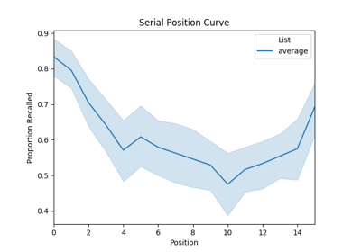
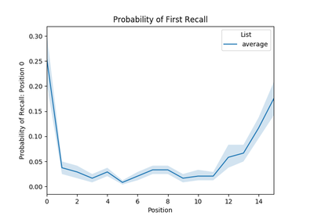
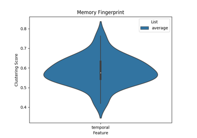
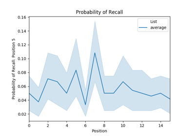
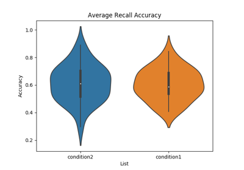
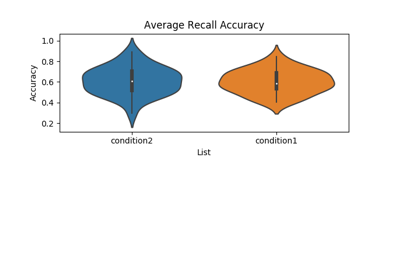

Gallery of Examples¶


Plot Lag-CRP

Plot serial position curve

Plot probability of first recall
Plot probability of first recall
Plot temporal clustering

Plot memory fingerprint

Plot probability of nth recall
Plot probability of nth recall

Plot free recall accuracy


Plot free recall accuracy in an existing ax object
Plot free recall accuracy in an existing ax object